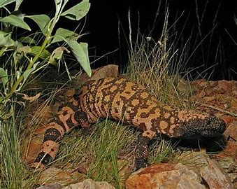

Monstruo de Gila

NOMBRE Y CIENTIFICO :Monstruo de Gila (Heloderma suspectum)
Hábitat: El monstruo de Gila es originario de las regiones desérticas y áridas del suroeste de Estados Unidos, principalmente en Arizona, Nuevo México y partes de México. Habita áreas rocosas, desérticas y de matorral, donde puede encontrar refugio en madrigueras o grietas para escapar del calor extremo.
Estilo de vida: Este reptil es principalmente nocturno y solitario. A menudo se oculta durante el día para evitar el calor y se alimenta de pequeños mamíferos, aves, insectos y huevos. Es una especie de bajo movimiento y se desplaza lentamente.
Características:
- Veneno: El monstruo de Gila es uno de los pocos lagartos venenosos del mundo. Tiene glándulas venenosas en su mandíbula inferior y, cuando muerde, inyecta veneno a través de surcos en sus dientes. Aunque su veneno no es mortal para los humanos, puede causar dolor e hinchazón.
- Coloración brillante: Tiene una piel gruesa y rugosa con un patrón de manchas naranjas o amarillas sobre un fondo negro, lo que le proporciona camuflaje en su entorno rocoso y desértico.
- Alimentación omnívora: Se alimenta de una dieta variada, que incluye pequeños vertebrados, huevos, insectos y plantas. Su lento metabolismo le permite sobrevivir con pocas comidas a lo largo del año.
- Longevidad: El monstruo de Gila puede vivir hasta 20 años o más en su hábitat natural. Esta longevidad es un reflejo de su lento metabolismo y su adaptación a un ambiente árido.
- Comportamiento defensivo: A pesar de su veneno, el monstruo de Gila no es agresivo. Prefiere huir o esconderse cuando se siente amenazado. Sin embargo, si se ve acorralado, puede morder como defensa.
El monstruo de Gila es un reptil único, con un veneno poderoso y un comportamiento generalmente tranquilo. Su apariencia distintiva y sus adaptaciones para sobrevivir en climas desérticos lo convierten en uno de los reptiles más fascinantes de América del Norte.
regresar al menu